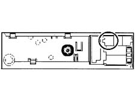
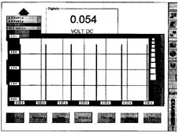
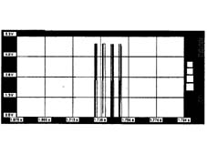
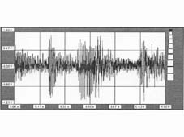
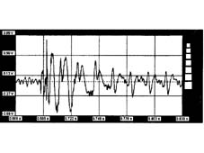
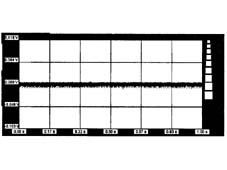

5580PH Check on operation of CD changer and radio module
- Path
- Test > 55 ELECTRICAL EQUIPMENT > 5580 SPECIAL ACCESSORIES > 5580P connect panel > 5580PH Check on operation of CD changer and radio module
- Kind
- test / check procedure
- Applies to
- all engines; all production periods
- Interactive page
- https://sloeber94.github.io/elrnDB-a156/en/#/3239182
Applies to: all engines; production: da 03/02 a 09/03, da 10/03
Internal diagnosis between CD changer and radio
Introduction.
To carry out this test correctly any music Compact Disc must be inserted in the holder in the luggage compartment (correctly positioned).
After having connected at least the Examiner negative supply lead to the vehicle earth and having switched it on, enter the Voltmeter ambient and connect the voltmeter lead (black probe) to the vehicle chassis.
Switch on the radio and connect the red voltmeter probe to the supply leads, positive first and then negative, at the radio output and check that the supply for the CD-Changer is correct.
After having selected a music Compact Disc track, position the red voltmeter probe alternately at the radio output signal leads (pins 13 and 14 of the blue connector).

Select 20 Volts full scale, 5 seconds on the Examiner and press the 'Start' button; the values that appear should be assessed with a 20% tolerance approx; the image displayed should be similar to the following.

To improve the display, show a single pulse using the zoom; the image displayed should be similar to the following.

After correct enablement sent from the radio to the CD changer, you can check whether the signal relating to the playing of the music track from the CD changer is correct: position the voltmeter's red lead alternately on the audio input cables in the radio (pins 19 and 20 of the blue connector); with the values selected previously, press the 'Start' button on the Examiner. The values of the image which appears should be assessed with a tolerance of around 20%; the image displayed should be similar to the following.

When the graphic trend of the voltage is amplified, the signal displayed will be similar to the following.

The presence of this graph, displayed at the CD changer output and sent to the radio amplifier, indicates that the player is working.
If the audio signal to the radio is not present, check that the enabling signal (described previously) coming from the radio is present at the CD-Changer connector.
If the signal is as follows, the CD changer, radio or wiriing is faulty.
